Desain interior
Merancang ruang dari kebutuhan orang yang memakainya. Mulai dari mendata kebutuhan, membagi zona, sampai suasana yang dibentuk cahaya, warna, dan material.
- Zoning dan sirkulasi
- Tata cahaya
- Warna dan material
- Konsep ruang

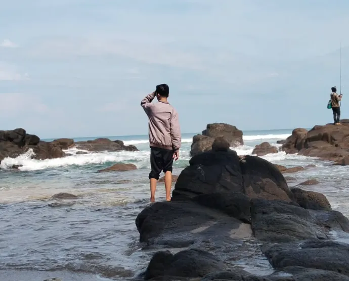
Ini aku yang asli, dari belakang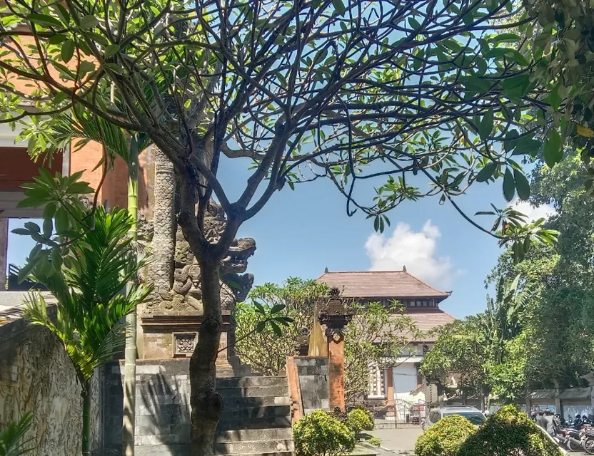
Berkunjung ke ISI Bali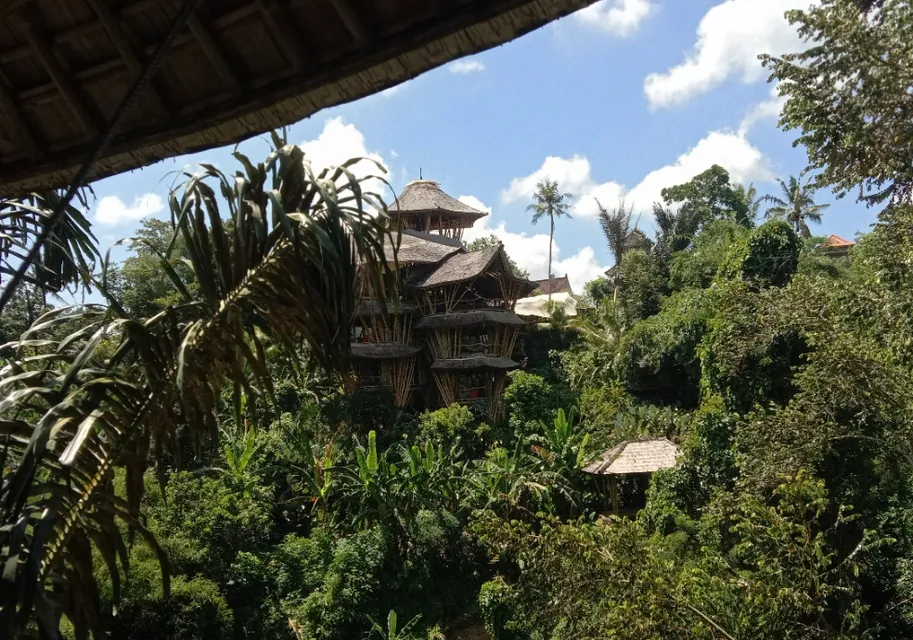
Menjelajah arsitektur Bali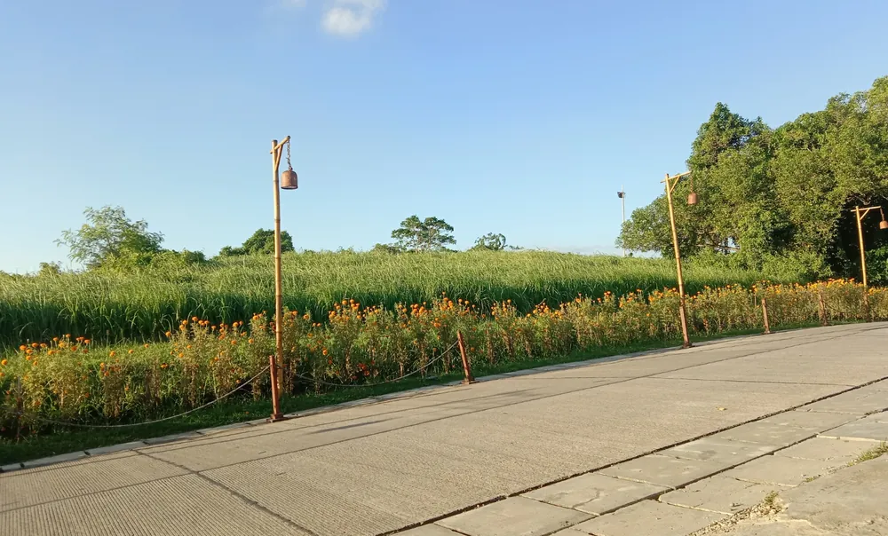
Sore di jalan berlampu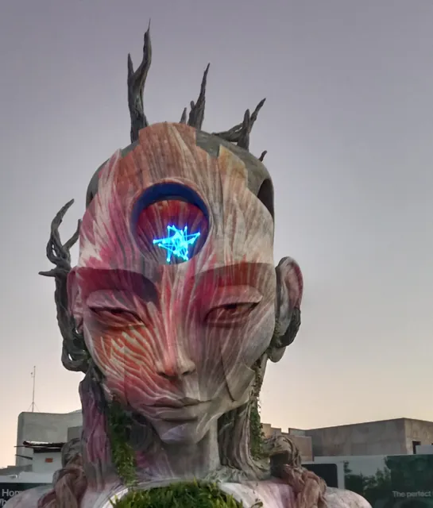
Cerita singkat
Namaku Musholi Rafi, biasa dipanggil Rafi. Lahir tahun 2007, asli Purwokerto, sekarang merantau di Yogyakarta. Sejak SMA aku senang berpikir rasional, berdiskusi dengan logika, dan mencari data sebelum percaya pada sesuatu. Aku juga pernah gagal masuk PTN impian, dan dari situ aku belajar bahwa kegagalan adalah data untuk perbaikan.
Waktu masuk Desain Interior ISI Yogyakarta, aku sempat kaget. Banyak teman berangkat dari rasa dan intuisi seni, sedangkan aku selalu ingin tahu alasannya. Lama-lama aku sadar, dua cara itu justru saling melengkapi. Rasa membuat desain hidup, data membuatnya bisa dipertanggungjawabkan.
Buatku kuliah bukan cuma soal IPK atau cari kerja. Kuliah itu soal pengalaman, diskusi, siapa temanmu, dan siapa dirimu. Makanya aku mendirikan Catatan Kuliah D.I., merapikan catatan kuliah jadi modul dan buku, dan membangun ruang diskusi di Discord. Mimpiku menjadi pendidik, dosen atau guru, dan suatu hari profesor.
Sebelas potongan kecil perjalananku, dari koridor kayu SMA, kampus seni, sampai Bali. Setiap foto punya ceritanya sendiri.
Foto ini diambil temanku tanpa aku sadari. Wajahku sengaja tidak kelihatan karena aku masih malu.
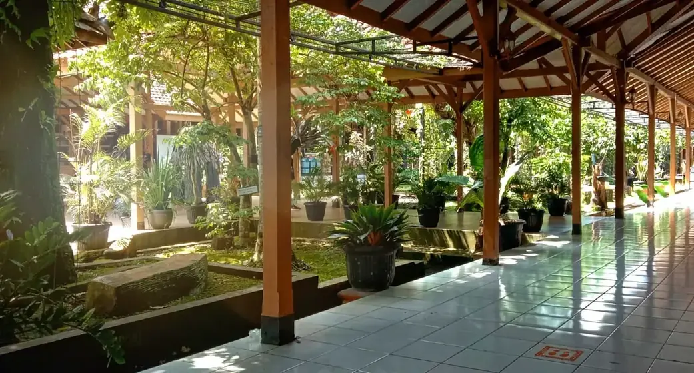
Di sekolah ini aku belajar banyak hal, dari guru-guru, teman-teman, dan pengalaman sehari-hari.
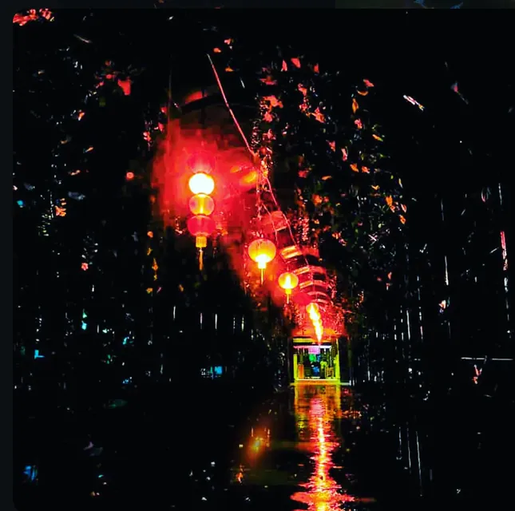
Ini SMA-ku saat aku pulang waktu maghrib, pas hujan turun. Di masa SMA inilah aku mulai tertarik menggambar.
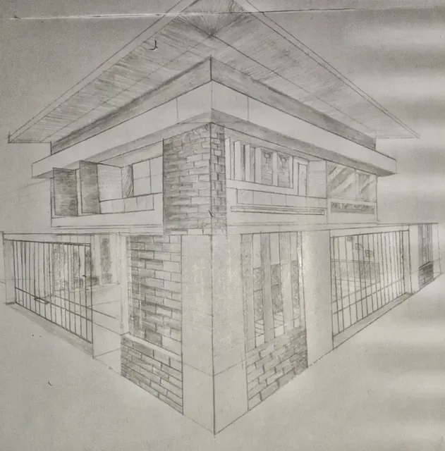
Aku membuatnya di kelas 1 SMA. Ini gambar pertamaku yang menurutku benar-benar bagus.
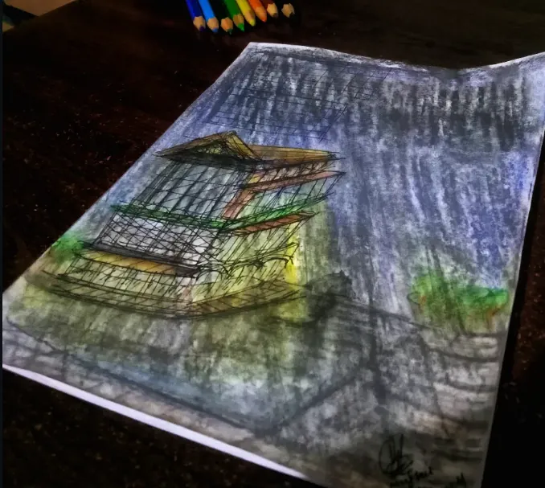
Ada rasa hangat saat melihat toko yang tetap buka waktu hujan. Rasanya ingin mampir sebentar, minum yang hangat, sambil berteduh.
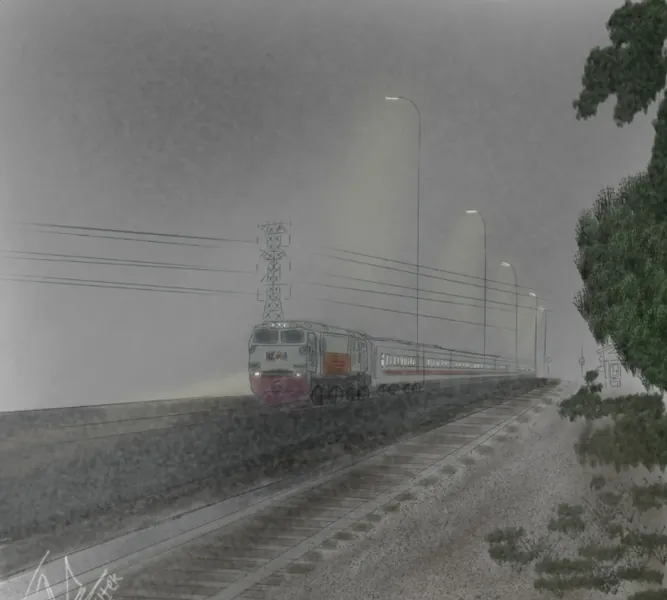
Aku suka sistem perkeretaapian, sejarahnya, mesinnya, sampai jenis-jenis keretanya.
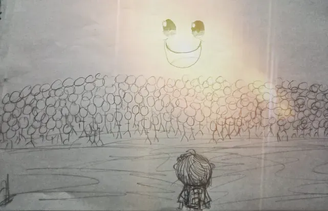
Aku menggambarnya malam-malam saat belajar SNBT, lalu kupajang di meja belajar. Satu orang di depan itu aku, yang harus membanggakan semua orang. Teman, keluarga, orang tua, kakek nenek, dan adikku. Mataharinya kubuat tersenyum karena aku suka melihat mereka tersenyum bahagia.
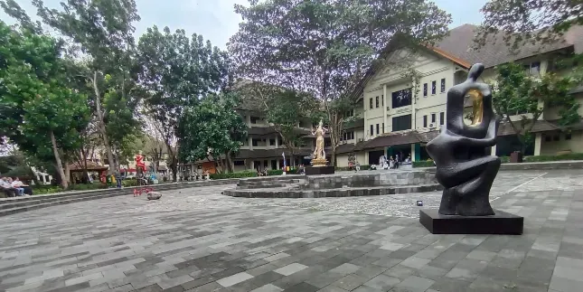
Ini kali pertama aku datang ke Fakultas Seni Rupa dan Desain ISI Yogyakarta. Sekarang di sinilah aku belajar setiap hari.
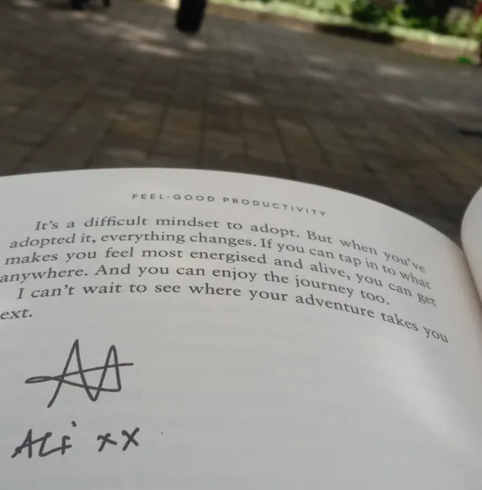
Ali Abdaal adalah penulis, dokter, dan orang yang suka belajar. Videonya yang membuatku mulai menulis jurnal di bulan Agustus 2025.
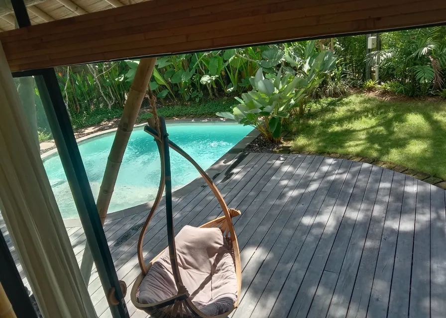
Aku suka fotografi. Kursi gantung ini kufoto di sebuah tempat di Bali yang namanya sudah aku lupa. Di perjalanan itu aku paling banyak bertanya soal arsitektur.
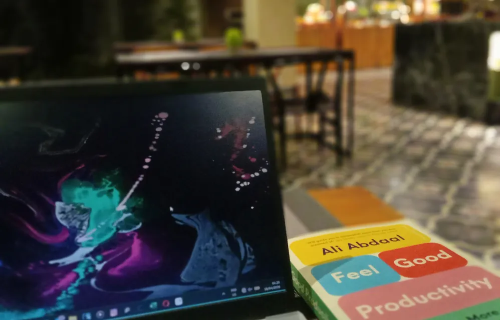
Sekitar jam 5 pagi di Hotel Grand Zuri, Bali. Aku membuka laptop, membaca buku, lalu mengerjakan apa yang harus dikerjakan.
Masih banyak cerita yang tidak muat di sini. Yang manis, yang berat, dan yang membuatku tetap jalan.
Baca cerita lengkapkuTerima kasih untuk dosen-dosen terbaik di Desain Interior ISI Yogyakarta. Banyak cara berpikir di website ini lahir dari kelas, asistensi, dan koreksi kalian. Juga untuk orang tua yang selalu mendukung, dan teman-teman yang jadi tempat diskusi sekaligus guru public speaking-ku.
Sedang dikerjakan
Buku yang sedang kutulis, penelitian yang sedang berjalan, dan masalah nyata yang sedang kucari solusinya. Diperbarui November 2026.
Bidang ilmu
Enam ruang ilmu desain yang kupelajari di kampus dan di luar kampus, dihubungkan satu selasar soft skill. Ketuk atau klik tiap ruang untuk masuk dan melihat isinya.
Merancang ruang dari kebutuhan orang yang memakainya. Mulai dari mendata kebutuhan, membagi zona, sampai suasana yang dibentuk cahaya, warna, dan material.
Mencocokkan ruang dan mebel dengan tubuh manusia, juga dengan suhu, cahaya, dan bunyi di sekitarnya, supaya aman dan nyaman dipakai lama.
Dari sketsa dan ukuran tubuh ke gambar kerja, sambungan, dan material.
Struktur dasar dan utilitas yang menentukan apa yang mungkin dan aman di dalam ruang.
Cara mengumpulkan bukti yang jujur, menganalisisnya, dan menuliskannya dengan rapi.
Proses dari memahami masalah sampai menguji solusi, diulang sampai benar-benar cocok.
Yang menghubungkan semua ruang di atas. Tanpa ini, ide bagus berhenti di kepala.
Rasa ingin tahu ini yang membuatku betah belajar. Ilmu yang kelihatannya jauh dari desain, seperti fisika, matematika, dan ekonomi, ternyata sering kepakai saat merancang ruang. Kadang jadi bahan tulisan di newsletter juga.
Software
Software desain dan produktivitas yang kupakai rutin. Aku pelajari dasarnya dengan serius, karena alat bisa berganti, tapi cara berpikirnya tetap terbawa.
Model 3D ruang dan mebel
Tempat denah berubah jadi ruang yang bisa dikelilingi. Aku memakainya untuk mencoba tata letak sebelum menggambar detail.
Gambar kerja 2D
Bahasa resmi antara desainer dan tukang. Garis, layer, dan ukuran harus jelas supaya yang dibangun sama dengan yang dirancang.
Denah di browser
Menggambar denah dan menata mebel langsung di browser, tanpa instal apa pun. Enak untuk mencoba beberapa pilihan tata letak dengan cepat, lalu dibagikan ke teman satu kelompok.
Layout dan presentasi
Aku memakai Figma untuk menyusun poster dan portofolio sederhana. Rapi karena ada grid, cepat karena komponennya bisa dipakai ulang. Untuk papan presentasi konsep, aku masih terus belajar.
Poster dan konten
Untuk desain yang harus jadi cepat, seperti poster acara, slide presentasi, dan konten media sosial. Templatenya membantu, tapi isi dan susunannya tetap kupikirkan sendiri.
Catatan dan sistem kerja
Otak keduaku. Catatan kuliah, daftar tugas, rencana riset, dan arsip referensi tersimpan di satu tempat yang saling terhubung.
Jadwal dan blok waktu
Tugas yang tidak punya jam biasanya tidak dikerjakan. Jadi aku memberi jam pada tugas penting, lengkap dengan pengingat.
Membaca buku
Tempatku membaca buku, dari pengembangan diri seperti tulisan Ali Abdaal sampai buku desain. Bagian yang kusorot kupindahkan ke catatan, supaya bacaan tidak cuma lewat.
Laporan dan makalah
Untuk laporan resmi yang harus mengikuti format kampus. Kuncinya ada di styles, daftar isi otomatis, dan sitasi.